Aula 5 ggplot2
O ggplot2 é um pacote para visualização de dados que serve tanto para análise de dados exploratória quanto para criação de plots para publicação em revistas científicas. O termo ggplot vem de Grammar of Graphics, um conceito introduzido por Chambers et al. (1983) que significa gramática de gráficos, um modelo de construção de gráficos com componentes independentes que podem ser organizados de diversas formas.
Este pacote facilita a produção de gráficos altamente customizados que podem ser gerados automaticamente usando o ambiente do R.
O ggplot2 em si pode ser extendido com outros pacotes que ampliam suas funcionalidades porém a princípio iremos focar nas funcionalidades de base do ggplot2.
5.1 Gramática de Gráficos
De acordo com os conceitos implementados por Chambers et al. (1983) todos os plots são compostos dos seguintes elementos:
- Dados que se deseja visualizar e o mapeamento estético das variáveis. Por mapeamento estético entende-se como que os dados serão visualizados, seja por tamanho dos elementos gráficos, cor, forma etc.
- Camadas são compostas de elementos geométricos ou
geompara abreviar. Estas camadas podem conter pontos ou linhas, polígonos ou transformações estatísticas oustat, com o resumo estatístico das variáveis por exemplo, média, mediana, intervalos quartis etc. - Escalas que podem ser atribuídas aos eixos do plot ou às cores e tamanho dos elementos. Escalas podem ser modificadas para mostrarem valores em distribuição logarítmica ou raiz quadrada e outras transformações.
- Sistema de Coordenadas usado, seja polar ou carteseano, incluindo as linhas do grid do plot ou até coordenadas para se criar um mapa.
- Subgrupos podem ser usados para dividir os dados de acordo com alguma variável categórica, para fins de comparação.
São chamados de
facets. - Tema: o tema controla elementos do gráfico que não mudam a visualização dos dados, como paleta de cores, tipografia, cor de fundo, cores das linhas e outros elementos.
Existem alguns pacotes desenvolvidos para modificar o tema com maior facilidade e alguns com temas prontos como o
ggthemes::. O tema padrão do ggplot2 pode não se adequado para o uso em diversos ambientes acadêmicos portanto é importante aprender a customizar os gráficos especialmente para publicações em revistas científicas.
5.2 Instalação
O ggplot2 é instalado quando se instala o tidyverse, porém se não se deseja instalar todos os pacotes do tidyverse apenas instale o ggplot2 usando:
Para usar o ggplot2 é necessário importar as funções do pacote instalado para o ambiente do R através de:
# Importar todos os pacotes do tidyverse
library(tidyverse)
# Importar apenas ggplot2
library(ggplot2)Apenas assim as fuções do ggplot2 poderão ser usadas no script ou no projeto.
5.3 Componentes principais dos gráficos
Cada plot tem 3 componentes principais:
- dados;
- mapeamento estético;
- no mínimo uma camada que descreve como mostrar cada observação dos dados.
Camadas são criadas através das funções
geom_*oustat_*.
Um exemplo muito simples usando o dataframe mpg do pacote dplyr.
ggplot(data = mpg, # Todo plot começa com a função ggplot()
aes( # Mapeamentos estéticos devem ficar dentro desta função
x = displ, # Variável mapeada no eixo x
y = hwy) # Variável mapeada no eixo y
) + # + indica que vou adicionar uma camada
geom_point() # Tipo de geometria usada para mostrar as observações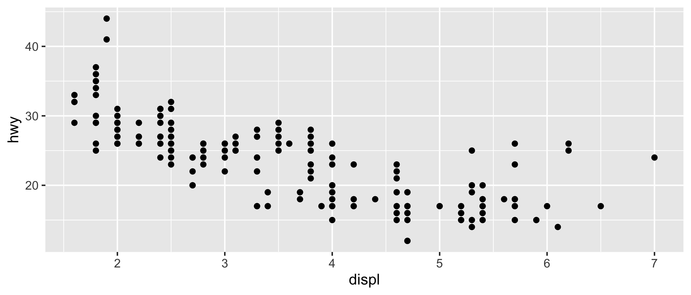
Neste gráfico de dispersão especificamos os dados dos eixos x e y e definimos que queremos ver as observações como pontos usando a função geom_point() então suprimos os 3 requerimentos básicos para um plot:
- dados:
mpg; - mapeamento estético: displa no eixo x e altura no eixo y;
- camada: pontos.
As escalas foram criadas automaticamente baseado nos valores máximos e mínimos das variáveis e o nome das variáveis foi colocado exatamente como está no dataframe.
Algumas simplificações podem ser feitas no código, por exemplo: em geral não é necessário deixar implícito a especificação de qual variável vai no eixo x e qual no eixo y.
Também não é necessário se deixar implícito o argumento data = portanto uma forma simplificada de escrever o mesmo código que resulta no mesmo gráfico é:
5.4 Cores, tamanhos, formas e outros atributos estéticos
No primeiro gráfico apenas usamos o mapeamentos estéticos x e y para definir em qual eixo as observações seriam colocadas, porém existem outras estéticas como tamanho (size), forma (shape) e cor (color, fill) que também podem ser mapeadas no gráfico de acordo com os valores das variáveis.
Um exemplo é plotar os valores da variável classe como cores no gráfico:

Assim começamos a procurar por relacionamentos nas variáveis. Podemos também usar o tamanho dos pontos como mapeamentos estéticos.

Veja que as legendas aparecem automaticamente ao lado direito, junto com as cores. Finalmente podemos usar a forma dos pontos para mapear outra variável.

Um erro comum é tentar especificar a cor do geom dentro da função aes() o que tem resultados completamente indesejados.
p1 <- ggplot(mpg, aes(displ, hwy)) +
geom_point(aes(color = "maroon"))
p2 <- ggplot(mpg, aes(displ, hwy)) +
geom_point(color = "maroon")
# Para funcionar você deve usar o pacote patchwork
p1 + p2
É importante lembrar que quando se inclui algum elemento estético dentro da função aes() os valores serão mapeados a uma escala estética portanto colocar um valor único, como um string irá produzir uma escala com valor único, não gerando o resultado esperado como mostrado no gráfico acima a esquerda.
5.5 Geoms
5.5.1 Geoms individuais
Estes geoms são os fundamentais para a construção de plots, podem ser por sí um gráfico completo ou podem compor gráficos mais complexos.
Cada um destes geoms são bidimensionais e requerem estéticas de ambos x e y.
Todos eles entendem color e size como sendo parâmetros de mapeamento estético e os geoms que contém área interna como geom_bar e geom_polygon também entendem o parametro fill como mapeamento.
Estes geoms estarão listados abaixo:
geom_area(): cria um plot de área que é um gráfico de linha com a área abaixo da linha preenchida. Dados agrupados são dispostos no gráfico sobrepostos.geom_bar(stat = "identity"): gráfico de barras, é necessário especificar ostat = "identity"porque o padrão dogeom_baré um plot de frequência, tornando-o essencialmente um gráfico unidimensional. Com a estatística definida como identity no eixo x ficam os valores especificados pela estética x e no eixo y os valores especificados pela estética y.geom_line(): gráfico de linhas que conecta os pontos na direção da esquerda para a direita,geom_path()funciona de forma similar porém conecta os pontos na ordem que estão dispostos os dados. Os mapeamentos estéticos que são aceitos por estes geoms sãolinetype(oultypara abreviar), onde diferentes linhas serão geradas para cada grupo egroupque é a especificação de dados agrupados sem ter efeito na visualização dentro do gráfico.geom_point(): gera um gráfico de dispersão, aceita o mapeamento estéticoshapeque gera diferentes formatos de pontos dependendo do grupo.geom_text(): usado quando em vez de desenhar pontos nas coordenadas, desenhar texto, seja palavras ou letras.geom_polygon(): gera polígonos preenchidos onde cada vértice é uma linha no dataframe com as coordenadas de x e y em colunas separadas. É util para construção de mapas.geom_rect(),geom_tile()egeom_raster(): geram retângulos. Os parâmetros necessários parageom_rect()são as coordenadas máximas e mínimas das facesxeysendoxmin,xmax,ymineymax.geom_tile()é exatamente o mesmo porém comxeysendo as coordenadas do centro do retângulo e os parâmetroswidtheheightcomo a largura e altura respectivamente.geom_raster()é usado caso o tamanho de todos os retângulos seja o mesmo para aumentar a velocidade da criação do gráfico.
Cada um destes geoms será demonstrado nas figuras abaixo.
Observe as semelhanças e diferenças dos eixos x e y, alguns extrapolam os valores estabelecidos pelos dados e podem estender os limites dos eixos.
df <- data.frame(
x = c(1, 5, 9, 3.4),
y = c(3, 6, 2, 5.4),
label = c("a", "b", "c", "a")
)
p <- ggplot(
df, aes(x, y, label = label)) +
labs(x = NULL, y = NULL) + # esconde o nome dos eixos
theme(plot.title = element_text(size = 12)) # diminui tamanho do texto
p1 <- p + geom_point() + ggtitle("ponto")
p2 <- p + geom_text() + ggtitle("texto")
p3 <- p + geom_bar(stat = "identity") + ggtitle("barra")
p4 <- p + geom_tile() + ggtitle("raster")
p1 + p2 + p3 + p4
p5 <- p + geom_line() + ggtitle("linha")
p6 <- p + geom_area() + ggtitle("área")
p7 <- p + geom_path() + ggtitle("caminho")
p8 <- p + geom_polygon() + ggtitle("polígono")
p5 + p6 + p7 + p8
5.5.2 Geoms coletivos
Os geoms individuais criam objetos gráficos para cada observação ou linha da tabela contendo os dados, por exemplo, cada ponto de geom_point() representa uma linha de dados mas os geoms coletivos mostram várias observações, ou linhas, por elemento gráfico gerado.
Isso pode ser o resultado de um resumo estatístico como um boxplot ou resultado de como os dados devem ser dispostos.
Linhas e path estão no meio termo entre individuais e coletivos porque apesar de cada extremidade de uma linha ser apenas uma observação, o segmento é o conjunto de duas observações da tabela, ou seja, dois pontos.
Para controlar o comportamento devemos usar a estética group.
Por padrão, a estética group é mapeada para as variáveis discretas (ou categóricas) dos dados fornecidos à função ggplot() e na maioria dos casos o padrão é o suficiente para que os dados fiquem organizados no gráfico, porém quando não há variável discreta usada, é necessário que seja definido explicitamente um mapeamento agrupador dos dados.
Há três casos comuns onde o padrão não é suficiente.
Estes serão considerados abaixo.
Para os exemplos a seguir será usado o dataset Oxboys do pacote nlme, que contém a altura e idade de 26 homens registrado em nove ocasiões diferentes.
data(Oxboys, package = "nlme") # carrega dados Oxboys do pacote nlme
head(Oxboys) # mostra as 6 primeiras linhas de OxboysR> Grouped Data: height ~ age | Subject
R> Subject age height Occasion
R> 1 1 -1.0000 140.5 1
R> 2 1 -0.7479 143.4 2
R> 3 1 -0.4630 144.8 3
R> 4 1 -0.1643 147.1 4
R> 5 1 -0.0027 147.7 5
R> 6 1 0.2466 150.2 65.5.2.1 Grupos múltiplos, uma estética
Em várias situações é necessário separar os dados em grupos mas com a mesma estética. Em outras palavras: se deseja visualizar sujeitos distintos mas não é necessário identificá-los usando cores ou outros artifícios visuais. Isto é comum para estudos onde se quer ver a diferença entre vários sujeitos ao longo do tempo.
Para exemplificar, abaixo na esquerda um plot com múltiplos grupos e uma estética e à direita múltiplos grupos e múltiplas estéticas:
p1 <- ggplot(Oxboys, aes(age, height, group = Subject)) +
geom_point() +
geom_line() +
ggtitle("Uma estética")
p2 <- ggplot(Oxboys, aes(age, height, color = Subject)) +
geom_point() +
geom_line() +
ggtitle("Múltiplas estéticas")
p1 + p2
Neste caso o padrão de agrupamento não funciona e se não for definido explicitamente ou se for definido incorretamente o plot terá uma aparência de “lâmina de serra”.

Se um group não for definido por uma única variável e sim por combinação de várias é possível usar a função interaction() para combiná-las, por exemplo: aes(interaction(identidade_escola, identidade_aluno)).
5.5.2.2 Grupos em camadas diferentes
Há vezes em que é necessário mostrar diferentes resumos estatísticos com agrupamentos específicos em camadas diferentes. Em uma camada pode mostrar valores não grupados enquanto que outra camada mostra um resumo estatístico agrupado.
Reaproveitando o exemplo acima, deseja-se criar uma linha que demonstre o aumento da altura dos sujeitos ao longo do tempo.
Abaixo na esquerda quando o mapeamento estético de group é feito no objeto principal, todas as camadas usam esta especificação para gerar a visualização, porém quando o mapeamento estético é especificado na camada específica, observa-se que apenas naquela camada o grupamento é feito.
p1 <- ggplot(Oxboys, aes(age, height, group = Subject)) +
geom_line() +
geom_smooth(method = "lm", se = FALSE) +
ggtitle("Grupo aplicado em \ntodas as camadas")
p2 <- ggplot(Oxboys, aes(age, height)) +
geom_line(aes(group = Subject)) +
geom_smooth(method = "lm", se = FALSE) +
ggtitle("Grupo aplicado na \ncamada line")
p1 + p2R> `geom_smooth()` using formula 'y ~ x'
R> `geom_smooth()` using formula 'y ~ x'
No lado direito, como o agrupamento foi feito na camada do geom_line() apenas estes dados estão agrupados enquanto que na camada geom_smooth() não foi feito nenhum agrupamento portanto a linha de regressão renderizada é em função de todos os dados.
5.5.2.3 Ignorando o grupamento padrão
Alguns gráficos tem uma escala discreta no eixo x, porém ainda se deseja criar uma camada que conecte os grupos separados por essa escala discreta.
Esta estratégia é usada para construção de interaction plots, profile plots e parallel coordinates plot.
Um exemplo é quando usamos o dataset Oxboys para observar a distribuição da altura entre todos os sujeitos ao longo das ocasiões onde a altura foi medida.
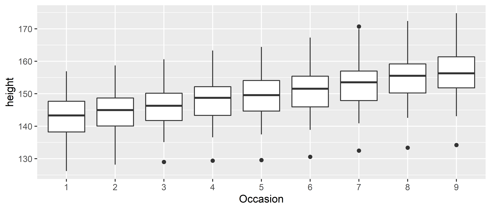
A variável discreta deste gráfico é Occasion porém não especificamos ela como sendo uma variável agrupadora e nem precisamos, porque o ggplot2 entende que variáveis discretas devem ser tratados como grupamentos por padrão.
Porém quando se deseja adicionar novas camadas com linhas de tendência ou outras visualizações este comportamento do ggplot2 pode não ser interessante por exemplo: quando tentamos adicionar linhas de tendência de aumento de altura as linhas geradas estão agrupadas pela variável Occasion resultando no gráfico abaixo:
ggplot(Oxboys, aes(Occasion, height)) +
geom_boxplot() +
geom_line(colour = "#6666FF", alpha = 0.5, size = 1.5)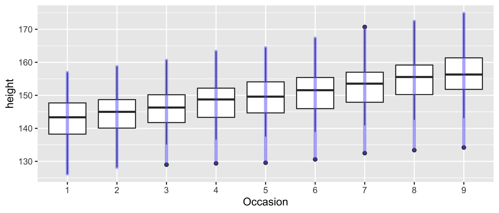
Para ignorar a variável agrupadora é necessario usar outra variável que agrupe os dados explícitamente como por exemplo abaixo:
ggplot(Oxboys, aes(Occasion, height)) +
geom_boxplot() +
geom_line(
aes(group = Subject), # Agrupamento explícito
colour = "#6666FF", alpha = 0.5, size = 1.5)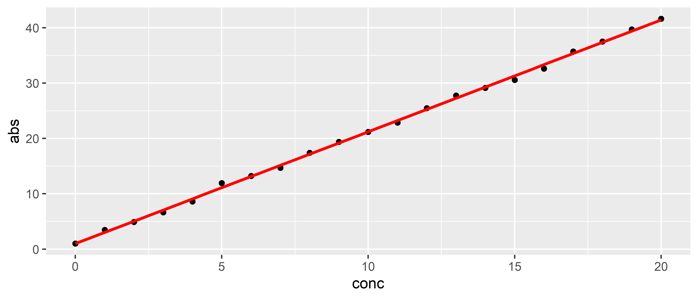
5.5.2.4 Ajustando estética a elementos gráficos
Um importante fator de geoms coletivos é saber como que diferentes estéticas se comportam quando são mapeadas a um geom individual.
No ggplot2 linhas e caminhos operam sob um princípio de “primeiro valor”, onde cada segmento é definido por duas observações e o ggplot2 aplica o mesmo valor estético (por exemplo: cor) associado à primeira observação que compõe o segmento.
Isso significa que a estética usada na primeira observação é usada para desenhar o primeiro segmento e a estética da segunda observação será usada para desenhar o segundo segmento e assim em diante.
Abaixo, exemplo visual deste efeito:
df <- data.frame(x = 1:4, y = 1:4, colour = c(1, 3, 5, 7))
p1 <- ggplot(df, aes(x, y, colour = factor(colour))) +
geom_line(aes(group = 1), size = 2) +
geom_point(size = 5)
p2 <- ggplot(df, aes(x, y, colour = colour)) +
geom_line(aes(group = 1), size = 2) +
geom_point(size = 5)
p1 + p2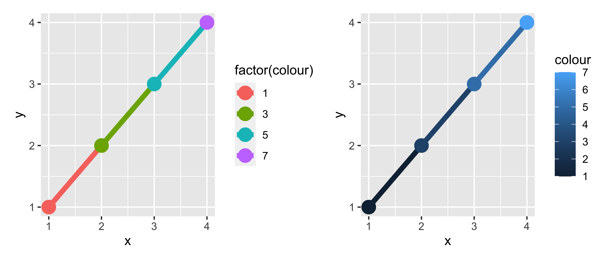
Ao lado esquerdo, onde a cor é uma variável discreta (factor), o primeiro ponto e primeiro segmento são vermelhos, exemplificando o que foi dito anteriormente e ao lado direito, ocorre o mesmo mesmo se tendo uma variável contínua.
Nota-se que não há um efeito de degradê entre as cores mesmo para variáveis contínuas, porém é possível atingir esta transição de cores fazendo a interpolação dos dados manualmente.
# 100 pontos de interpolação
xgrid <- with(df, seq(min(x), max(x), length = 100))
# dataframe com dados interpolados
interp <- data.frame(
x = xgrid,
y = approx(df$x, df$y, xout = xgrid)$y,
colour = approx(df$x, df$colour, xout = xgrid)$y
)
ggplot(interp, aes(x, y, colour = colour)) +
geom_line(size = 2) +
geom_point(data = df, size = 5)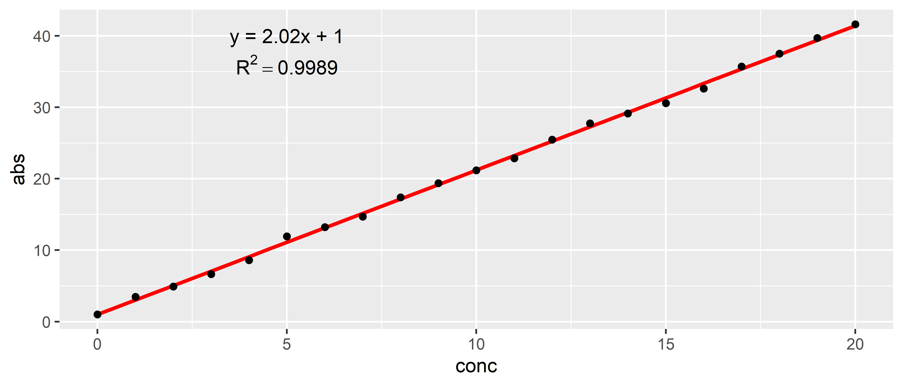
Neste gráfico são criados vários segmentos de reta usando os dados do dataframe interp e os pontos usados são os mesmos do dataframe df usado nos gráficos anteriores.
Outra limitação do ggplot2 é que linhas e caminhos devem tipo constante.
Não é possível renderizar uma linha com tipo de linha variável.
Outros geoms, como os coletivos são mais complicatos do que linhas e caminhos, e um elemento gráfico pode ser mapeado a várias observações.
Nestes casos não é muito óbvio como as observações deveriam ser combinadas.
Por exemplo: como colorir um polígono que tem pontos com cores diferentes em cada vértice?
Devido a esse tipo de ambíguidade o ggplot2 adota uma regra única: “as estéticas de elementos individuais são apenas usadas se são todas iguais”.
Se as estéticas dos elementos individuais são diferentes o ggplot2 usará um valor padrão.
Estes problemas são mais relevantes quando mapeando estéticas à variáveis contínuas.
Para variáveis discretas o comportamento padrão do ggplot2 é tratar a variável como parte da estética do grupo.
O efeito é que o geom coletivo seja dividido em pedaços menores.
Isto funciona muito bem para gráficos de barra e de área porque ao empilhar os pedaços individuais o formato fica igual aos dados não agrupados.
p1 <- ggplot(mpg, aes(class)) +
geom_bar()
p2 <- ggplot(mpg, aes(class, fill = drv)) +
geom_bar() +
theme(axis.text.x = element_text(angle = 90, hjust = 1))
p1 + p2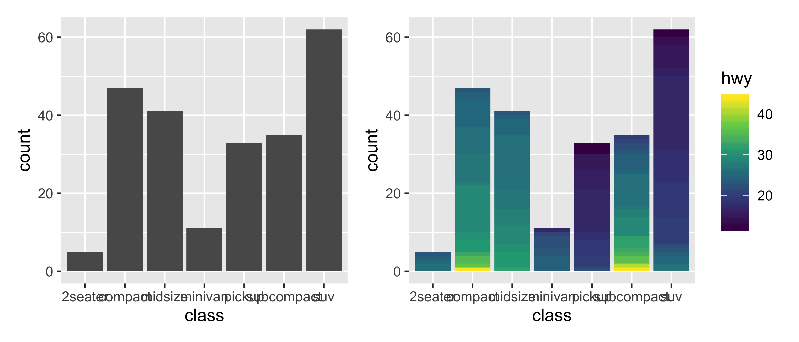
Se as estética fill for mapeada a uma variável contínua, não funciona e o grupamento padrão continua sendo class (eixo x).
Para ter múltiplas cores por barra é necessário forçar o ggplot a ignorar o grupamento padrão através da definição explícita do grupamento.
Exemplo abaixo:
p1 <- ggplot(mpg, aes(class, fill = hwy)) +
geom_bar()
p2 <- ggplot(mpg, aes(class, fill = hwy, group = hwy)) +
geom_bar() +
scale_fill_viridis_c()
p1 + p2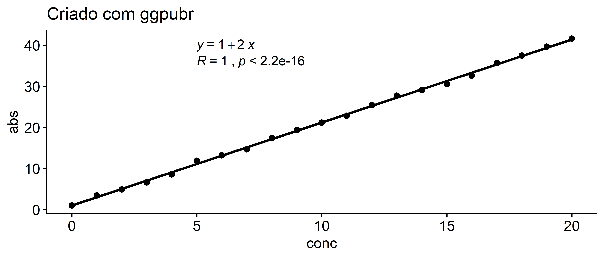
Acima à direita a aparência de transição de cores na verdade é apenas um grande número de pequenos grupos de uma variável discreta que geram esse efeito.
5.5.3 Resumos estatísticos
Em vários casos é necessário mostrar incerteza estatística, seja uma distribuição de dados ou erro padrão de medidas replicadas. Existem 4 básicos tipos de geoms para se fazer isso dependendo se os dados são contínuos ou discretos e se deseja-se mostrar resumos estatísticos, intervalo e limites da distribuição dos dados. Os geoms comuns são:
- Eixo x discreto, limites:
geom_errorbar(),geom_linerange(); - Eixo x limites e valor central:
geom_crossbar(),geom_pointrange(); - Eixo x contínuo, limites:
geom_ribbon(); - Eixo x contínuo, limites e valor central:
geom_smooth(stat = "identity").
Estes geoms presumem que se deseja visualizar a distribuição dos valoes de y em função de x mas o oposto pode ser alcançado de outras formas. Abaixo exemplos destes geoms:
df <- data.frame(
x = 1:4,
y = c(18,8,14,5),
sd = c(0.3,1.4,2.1,0.9) # desvio padrão
)
plot <- ggplot(df, aes(x = x, y = y,
ymin = y - sd, # valor de y menos sd (desvio padrão)
ymax = y + sd))# valor de y mais sd
p1 <- plot + geom_crossbar() + ggtitle("geom_crossbar()")
p2 <- plot + geom_pointrange() + ggtitle("geom_pointrange()")
p3 <- plot + geom_smooth(stat = "identity") + ggtitle("geom_smooth()")
p1 + p2 + p3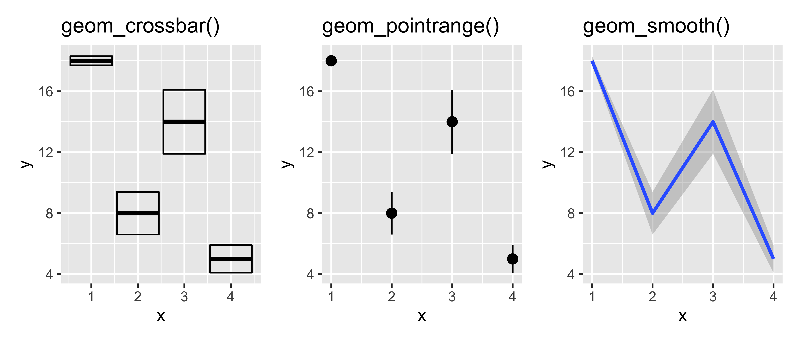
p1 <- plot + geom_errorbar() + ggtitle("geom_errorbar()")
p2 <- plot + geom_linerange() + ggtitle("geom_linerange()")
p3 <- plot + geom_ribbon() + ggtitle("geom_ribbon()")
p1 + p2 + p3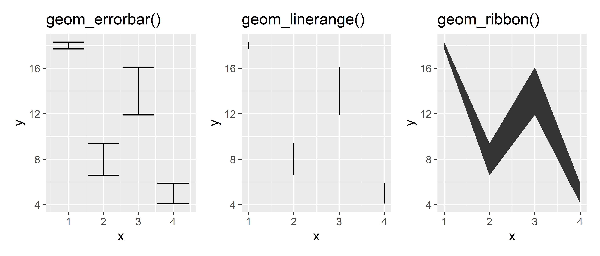
Há várias formas de calcular erro padrão, desvio padrão e outras métricas de erro por isso o ggplot2 não fornece formas simples de calculá-lose isso deve ser feito manualmente.
O livro “R for Data Science” fornece conselhos sobre formas de como fazer isso.
5.5.4 Plotando distribuições
A forma mais comum de demonstrar distribuições de dados é na forma de histogramas.
O dataset diamonds contém informações sobre aproximadamente 50 mil diamantes e será usado para demonstrar como criar histogramas.
Para distribuição em uma dimensão o geom mais importante é o geom_histogram()
p1 <- ggplot(diamonds,aes(depth)) +
geom_histogram()
p2 <- ggplot(diamonds,aes(depth)) +
geom_histogram(binwidth = 0.1) + # definindo largura das barras
xlim(c(55,70)) # definindo limites no eixo x
p1 + p2R> `stat_bin()` using `bins = 30`. Pick better value with `binwidth`.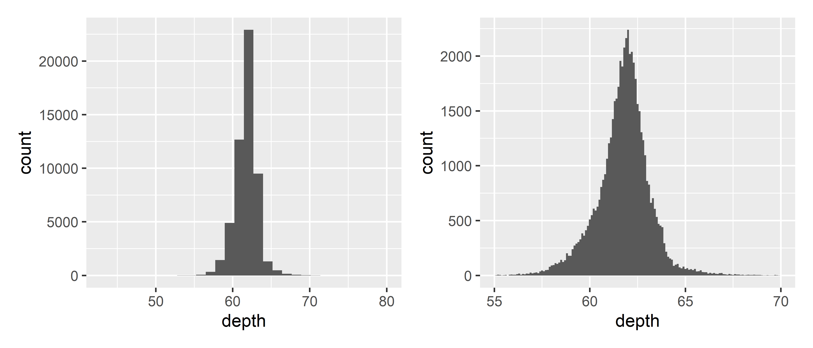
Histograma é uma vizualização que mostra a frequência de valores dentro de um intervalo especificado na forma de retângulo.
A base do retângulo representa o intervalo dos dados (por exemplo 5–10 anos) e a altura é o número de indivíduos que se adequam a esta faixa de idade.
Para se ajustar a largura do retângulo podem ser usados os argumentos bins = e binwidth = que são respectivamente o número de retângulos e a largura dos retângulos.
Logo para maior resolução pode ser usado um valor de binwidth baixo ou valor de bins alto como mostrado na imagem acima.
O dataset diamonds contém informações sobre as dimensões e o tipo de corte, claridade e cor dos diamantes portanto podemos usar estes dados para modificar a visualização.
Neste caso para visualizar diferenças entre os tipos de corte podem ser usadas 3 técnicas:
- Mostrar vários múltiplos do histograma com
facet_wrap(); - Classificá-los usando cores;
- Usar outra estatística de histograma.
p1 <- ggplot(diamonds, aes(depth)) +
geom_histogram(binwidth = 0.1) +
xlim(58, 68) +
theme(legend.position = "none") +
facet_wrap(~cut) +
ggtitle("a. facet_wrap()")
p2 <- ggplot(diamonds, aes(depth)) +
geom_freqpoly(aes(colour = cut), binwidth = 0.1, na.rm = TRUE) +
xlim(58, 68) +
ggtitle("b. geom_freqpoly()") +
theme(legend.position = "none")
p3 <- ggplot(diamonds, aes(depth)) +
geom_histogram(aes(fill = cut), binwidth = 0.1, position = "fill",
na.rm = TRUE) +
xlim(58, 68) +
ggtitle("c. position = fill")
p1 / (p2 + p3) +
plot_layout(guides = "collect") # coloca as legendas em um mesmo lugar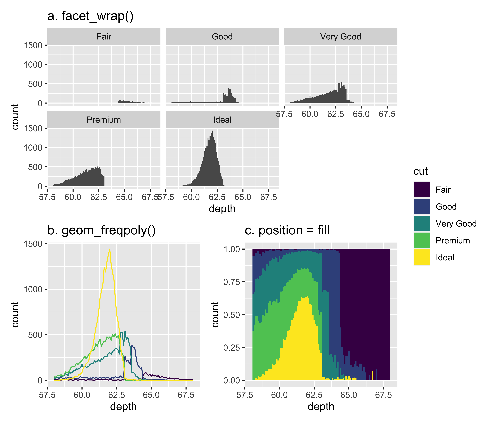
Na figura ??a é mostrada a função facet_wrap() que tem a função de criar vários subplots baseado na variável categórica escolhida.
O uso de facets será explicado melhor na seção 5.8.
Em ??b é usado o geom_freqpoly() que cria um polígono cujos picos correspondem a altura das barras nos histogramas e por fim em ??c em vez de ser reportado a frequência de valores em cada um dos intervalos, é reportado a proporção entre as classes (cut) para aquele intervalo de valores, o que facilita na visualização comparativa entre classes.
A alternativa para histogramas é o uso de density plots, que podem ser interpretados como histogramas “suavizados”.
Density plots estimam os valores entre os intervalos e suavizam os dados usando a distribuição normal.
Usando as mesmas variáveis dos gráficos acima podemos criar density plots usando a função geom_density()
p1 <- ggplot(diamonds, aes(depth)) +
geom_density(na.rm = TRUE) +
xlim(58, 68) +
theme(legend.position = "none")
p2 <- ggplot(diamonds, aes(depth, fill = cut, colour = cut)) +
geom_density(alpha = 0.2, na.rm = TRUE) +
xlim(58, 68) +
theme(legend.position = "none")
p1 + p2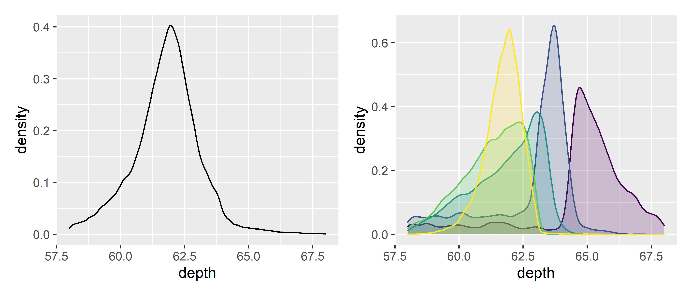
Nota-se que a área de cada uma destas estimativas é padronizada para 1 para que não se perca a informação do tamanho relativo entre os grupos.
Histogramas, a estimativa da densidade e o polígono de frequência são uteis para se visualizar detalhadamente distribuições porém não são extremamente úteis quando se busca compará-las. Portanto é necessário se ter alternativas que sacrifiquem qualidade para se ter maior quantidade, e as principais são:
geom_boxplot(): também chamado de box-and-whisker, mostra 5 dados estatísticos da distribuição assim como os outliers (valores que extrapolam os mínimos e máximos da distribuição). São menos detalhados que histogramas mas também ocupam menos espaço. Os 5 dados estatísticos são:- mediana;
- primeiro quartil (25%);
- terceiro quartil (75%);
- limite inferior;
- limite superior.
geom_violin(): versão compacta do density plot. Os cálculos são feitos da mesma forma porém os resultados são demonstrados de forma similar aos boxplots;geom_dotplot(): renderiza um ponto para cada observação, ajustado no espaço para que não se sobreponham, útil para datasets menores.
Os geoms boxplot e violin citados exigem duas dimensões para serem criados, ao contrário dos citados anteriormente. Abaixo exemplos dos 3:
plot <- ggplot(diamonds, aes(x = cut, y = depth))
p1 <- plot + geom_boxplot() +
ggtitle("geom_boxplot()")
p2 <- plot + geom_violin() +
ggtitle("geom_violin()")
p3 <- ggplot(mpg, aes(x = hwy)) +
geom_dotplot() +
ggtitle("geom_dotplot()")
p1 + p2 + p3R> `stat_bindot()` using `bins = 30`. Pick better value with `binwidth`.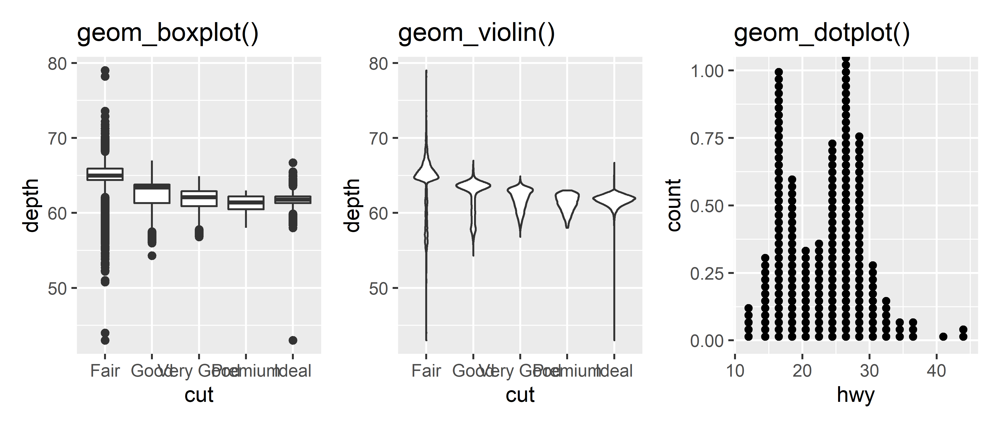
5.5.5 Anotações
5.5.5.1 Elementos textuais
Em praticamente todos os casos em que se deseja construir um gráfico é necessário adicionar um título, subtítulo, legenda, nomes para os eixos e até números ou letras que identifiquem subfiguras.
O ggplot2 possui uma função justamente para isso, a função labs().
Dentro dela podem ser especificados todos estes elementos.
Abaixo, um exemplo:
ggplot(mpg,
aes(
x = hwy,
y = cty,
col = class
)) +
geom_point() +
labs(title = "Gráfico sobre carros", # título
subtitle = "Diferenças entre classes de carros", # sub-título
x = "Consumo em rodovias [km/l]", # nome do eixo x
y = "Consumo na cidade [km/l]", # nome do eixo y
caption = "Fonte: Dados do dataset mpg", # legenda alinhada abaixo à direita
tag = "(a)") # identificador de subfigura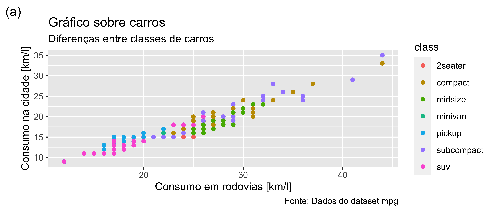
Além destes elementos externos à área onde os dados estão plotados pode ser usado as funções ggtitle(), xlab() e ylab(), que são atalhos para especificar título, legenda do eixo x e y respectivamente.
Para modificar a fonte, posição e outras propriedades destas legendas visite a seção 5.6 e 5.9.
Outros elementos textuais que podem ser adicionados a um gráfico são aqueles relacionados aos dados contidos na tabela que se está analisando.
O uso do geom_text() foi brevemente explorado e é útil para se adicionar um rótulo nas coordenadas x e y específicas.
Existem várias estéticas do geom_text() porque texto possui muitas propriedades, como: fonte, formatação, cor, etc.
O geom_label() funciona da mesma forma que geom_text() porém com um retângulo por trás do texto.
Abaixo exemplos:
dados <- crossing( # cria combinação entre todos os tipos de fonte
face = c("plain", "bold", "italic"),
family = c("sans", "serif", "mono")
)
p <- ggplot(dados,
aes(
x = face,
y = family,
label = paste0(family,"\n",face), # rótulo do texto
fontface = face, # formatação da fonte (bold, italic, plain)
family = family # família da fonte (italic, sans, mono)
))
p1 <- p + geom_text()
p2 <- p + geom_label()
p1 + p2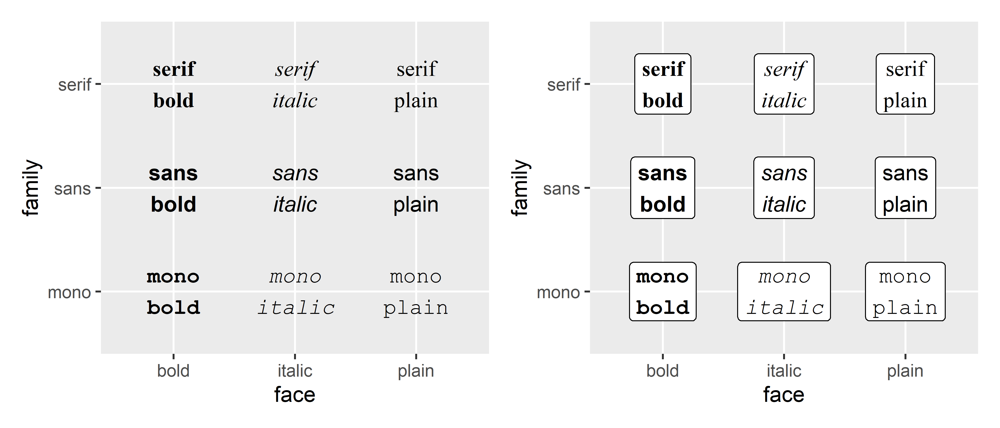